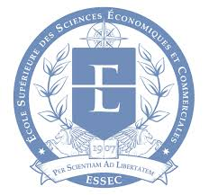

<html></html>
<head>
    <meta charset="utf-8">
    <meta name="viewport" content="width=device-width, initial-scale=3.0">
    <link rel="stylesheet" href="style.css"> 
    <link rel="icon" href="icon.png"> 
    <title>WAGON 2020</title>
</head>

<body>

<div class="CONTAINER">

   <div id="INTRO">
        <h1>Présentation en ligne :
             <br> <br>
        Projet programmation
        2020 le wagon </h1>
    </div>

    <div>
        <h3> Objectifs :</h3>   
Actuellement en première année d’études d’école de commerce à l’ESSEC, pour valider mon M1 en management, je souhaiterai exercer une carrière liée aux domaines bancaires. 
Je suis en effet très intéressé par le monde professionnel de la finance, en particulier dans les sphères de l’investissement en bourse, l’assurance, l’immobilier, la finance d’entreprise, l’analyse financière ou encore le financement des professionnels et des particuliers.
Sérieux et organisé, je serai ravi de pouvoir apporter mes capacités d’analyse, de communication, d’esprit d’équipe, ainsi que les compétences acquises au cours de mon cursus pour travailler avec enthousiasme à vos côtés.
    </div>

    <div>
     
        <h2>
Sebastian JÄGER
18 ans 
Franco-allemand
<br>
<br>
<a href="https://www.facebook.com/sebastian.jager.9822" title="Mes réseaux"></a>
        </h2>
     
    </div>

    <div id="SPORTS">
        <h3>Sports</h3>
        <li> Rugby </li> 
        <br>
        <li> Boxe </li>
        <br>
        <li> Musculation </li>
        <br>
        <li> Course </li>
        <br>
        <li> Parachute</li>
            
    </div>

    <div>
        <h3>Centres d'interets </h3>
Actualité
Bénévolat
Finance
Entrepreunariat
Scouts 
    </div>

    <div>
<h3>Qualités</h3>
    Rigoureux 
    Déterminé
    Debrouillard 
    Autonome
    </div>

   <div id=EFFETS>
     
   </div>

</div>

</body>
</html>